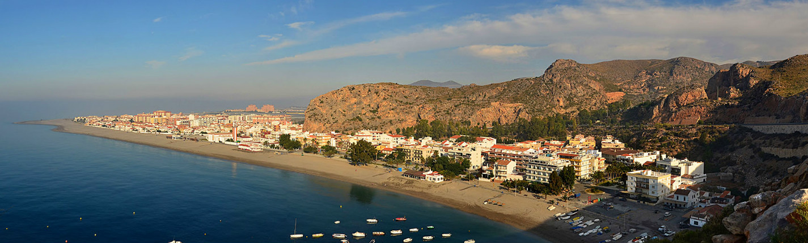

Salobreña. El Peñón.
Salobreña es un conocido destino turístico situado en la provincia de Granada. Su peculiar estructura medieval está compuesta de callejones y pequeñas casas blancas, además de un imponente castillo y espectaculares vistas a las montañas que lo rodean, sin olvidarnos de sus playas amplias y bien equipadas. Todo esto hace de este pequeño pueblo el lugar ideal para pasar tus vacaciones. La playa con más renombre es, sin lugar a dudas, la playa del Peñón de Salobreña, de 1850 metros de longitud de arena gruesa. Sus aguas azules y transparentes acarician suavemente el Peñón, una pequeña isla unida junto a la playa a través de una franja de tierra. La playa ofrece algunos servicios, entre los que destacan el servicio de vigilancia y el acceso facilitado para personas con movilidad reducida.
Playa Calahonda. Motril.
Los 1200 metros de esta playa urbana se caracterizan por su arena oscura y gruesa, mientras sus aguas azules, cristalinas y tranquilas han ganado recientemente la Bandera Azul, un premio otorgado por la FEE (Fundación para la Educación Ambiental). Gracias a la gran cantidad de instalaciones disponibles (aseos, duchas, pasarelas, limpieza, vigilancia y salvamento, así como una cabina de la Cruz Roja y un acceso para personas con movilidad reducida), la playa tiene una tasa muy alta de ocupación, especialmente durante los meses de verano. El encanto del paseo marítimo, los hoteles y los chiringuitos, junto con las más de 100 plazas de aparcamiento y la parada de autobús cercana a la playa, hará que te guste aún más este lugar. Ahora sabes por qué esta playa se encuentra en esta selección de las mejores playas de Granada.

La Joya. Motril.
Los 600 metros de arena y grava de la pequeña cala de La Joya están rodeados por un acantilado y rocas que los protegen. La dificultad de acceso (tienes que bajar una escalera de 200 peldaños) y la falta de instalaciones y servicios son las características a destacar de esta playa virgen, donde los visitantes practican nudismo.
San Cristóbal. Almuñecar.
Esta playa de arenas oscuras llamada La China, se extiende 1100 metros por la zona urbanizada de Almuñecar. Sus costas son acariciadas por el suave oleaje de aguas cristalinas, rodeados de una exuberante vegetación. Normalmente es muy frecuentada y ofrece diversas instalaciones como servicios de vigilancia y salvamento, policía local, duchas, aseos, servicio de alquiler de hamacas y sombrillas, servicio de limpieza, papeleras, zonas infantiles, y algunos chiringuitos, donde podrás degustar deliciosos pescaitos fritos.